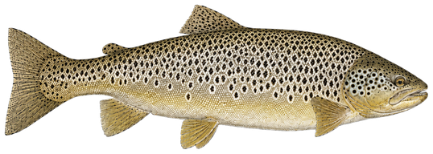
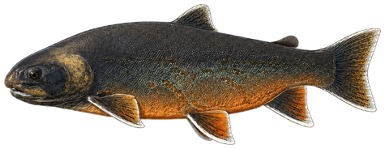

Aðstæður núna
Veðurspá í Vatnskoti, 7 dagar
Hleð inn veðurspá…
Veðurgögn frá Bliku ↗.
Vatnshiti síðustu daga
Vatnshiti frá Landsvirkjun ↗.
Tunglstaða
Tunglmynd: Gregory H. Revera / Wikimedia Commons CC BY-SA 3.0
Leyfi og reglur
Veiðileyfi
Veiðikortið gildir fyrir landi þjóðgarðsins, frá Langatanga til og með Leirutá. Land Kárastaða er undanskilið.
Kaupa dagsleyfi ↗Börn yngri en 14 ára veiða frítt í fylgd með korthafa.
Tímabil og agn
- 20. apríl – 31. maí
- Eingöngu fluga og flugustöng. Öllum urriða skal sleppt.
- 1. júní – 15. september
- Fluga, spónn og maðkur.
Heimilt er að veiða allan sólarhringinn.
Bönn
- Veiðibann í Ólafsdrætti frá 1. júlí til 31. ágúst, vegna hrygningar kuðungableikjunnar.
- Öll veiði í Öxarárósi er bönnuð.
- Veiði úr bátum er bönnuð korthöfum Veiðikortsins.
Merktir urriðar
Sumir urriðar eru merktir neðan við bakugga. Skráðu númer merkisins áður en fiskinum er sleppt og komdu því til þjónustumiðstöðvarinnar á Þingvöllum eða Laxfiska ↗.
Veiðispá
Hleð inn veiðispá…
Veiðitímabilið er ekki í gangi. Það hefst 20. apríl.
Spálíkanið er virkt á veiðitímabilinu, frá 20. apríl til 15. september.
| Morgunn 04–10 | Dagur 10–18 | Kvöld 18–23 | Nótt 23–04 | |
|---|---|---|---|---|
 |
||||
 |
||||
| Aðstæður |
Hvernig er spáin reiknuð?
Spáin vegur saman veðurspá frá Bliku, vatnshita frá Landsvirkjun, skýjahulu og stöðu tunglsins. Vægi þessara þátta byggja ekki á almennri formúlu heldur á reynslu og þekkingu sem hefur safnast við veiðar í Þingvallavatni sjálfu. Líkurnar á töku birtast sem 1 til 5 upplýstir fiskar, því fleiri því betra, en fluguveiðiaðstæður eru metnar slæmar, fínar eða mjög fínar. Urriði og bleikja fá hvor sína spá, enda hafa veður og birta ólík áhrif á tegundirnar tvær.
Spáin er leiðbeinandi og kemur ekki í stað eigin mats við vatnið, aðstæður geta breyst hratt.
Spáin er þróuð samhliða heimildamynd um Þingvallavatn.
Kort af þjóðgarðinum
Hleð korti…

Þessi síða er hluti af stærri sögu
Veiðispáin og kortið hér urðu til samhliða gerð heimildamyndar um Þingvallavatn: um veiðina, vísindin og lífríkið sem lifir undir yfirborðinu. Myndin er sjálfstætt verkefni og er í tökum núna.